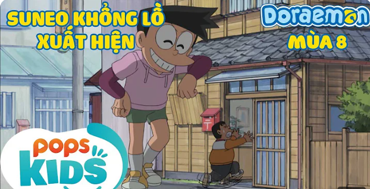

Welcome đến với khách sạn Nobi-
5,147,528 lượt xemChannel Fun

Suneo khổng lồ-
5,147,528 lượt xemChannel Fun

Còi điều khiển vật-
5,147,528 lượt xemChannel Fun

Lạc vào vùng đất bánh kẹo-
5,147,528 lượt xemChannel Fun
Tớ là Mari-
5,147,528 lượt xemTác giả
Bộ phim kể về câu chuyện Thạch Sanh chém Trân Tinh cứu dân, bắn Đại Bàng cứu công chúa, dùng tiếng đàn nhân nghĩa dẹp tan quân xâm lăng. Nhưng cuộc đời Thạch Sanh luôn bị tên Lý Thông làm cho điêu đứng. Cuối cùng chính nghĩa đã thắng. Tên Lý Thông gian ác bị đền tội. Mời các bjan cùng đón xem và cảm nhận.
Bộ phim kể về câu chuyện Thạch Sanh chém Trân Tinh cứu dân, bắn Đại Bàng cứu công chúa, dùng tiếng đàn nhân nghĩa dẹp tan quân xâm lăng. Nhưng cuộc đời Thạch Sanh luôn bị tên Lý Thông làm cho điêu đứng. Cuối cùng chính nghĩa đã thắng. Tên Lý Thông gian ác bị đền tội. Mời các bjan cùng đón xem và cảm nhận.
Bộ phim kể về câu chuyện Thạch Sanh chém Trân Tinh cứu dân, bắn Đại Bàng cứu công chúa, dùng tiếng đàn nhân nghĩa dẹp tan quân xâm lăng. Nhưng cuộc đời Thạch Sanh luôn bị tên Lý Thông làm cho điêu đứng. Cuối cùng chính nghĩa đã thắng. Tên Lý Thông gian ác bị đền tội. Mời các bjan cùng đón xem và cảm nhận.